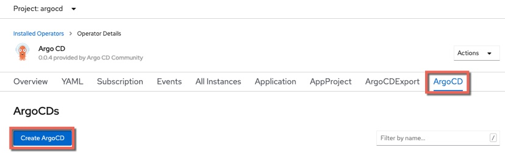
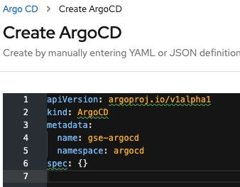

ArgoCDInstall
Installing ArgoCD in OCP 4.3
Introduction
ArgoCD provides an Operator in OperatorHub to help with installation but there are some additional steps. It is assumed that you have already installed the ArgoCD CLI (click here for instructions if you haven't)
Installation of ArgoCD in OCP 4.3
- Create a namespace for ARGOCD
oc new-project argocd
-
In the OCP UI navigate to Operators --> OperatorHub
-
Search for the
ArgoCDOperator and install it in to theargocdnamespace -
Create an instance of the
ArgoCD Custom Resource Definition

- When the YAML editor is displayed, change the name from
example-argocdto something more useful. In this example I will usegse-argocd

-
Click Create
-
Issue the command below to get the server
pod name
oc get pods -n argocd | grep argocd-server
The response will be similar to that shown below:
oc get pods -n argocd | grep argocd-server
gse-argocd-server-5c486f5666-2lqwb 1/1 Running 0 10m
Note the name of the pod, in this case gse-argocd-server-5c486f5666-2lqwb
- Issue the command below to get the
routefor the ArgoCD server
oc get routes
The response will be similar to that shown below:
oc get routes
NAME HOST/PORT PATH SERVICES PORT TERMINATION WILDCARD
gse-argocd-server gse-argocd-server-argocd.gse-appmod-0143c5dd31acd8e030a1d6e0ab1380e3-000.us-south.containers.appdomain.cloud gse-argocd-server https passthrough/None None
- Use the
wildcardfrom therouteto log in to the ArgoCD server as shown below:
argocd login --insecure gse-argocd-server-argocd.gse-appmod-0143c5dd31acd8e030a1d6e0ab1380e3-0001.us-south.containers.appdomain.cloud
Enter admin as the Username
Enter the server pod name as the Password (for example gse-argocd-server-5c486f5666-2lqwb)
- Once you are logged in, change the password using the command shown below:
argocd account update-password
-
In the OCP UI, navigate to Networking --> Routes and click the link to access the ArgoCD UI
-
Use
adminand your new password to log in
Conclusion
You've now installed ArgoCD in to OCP 4.3.